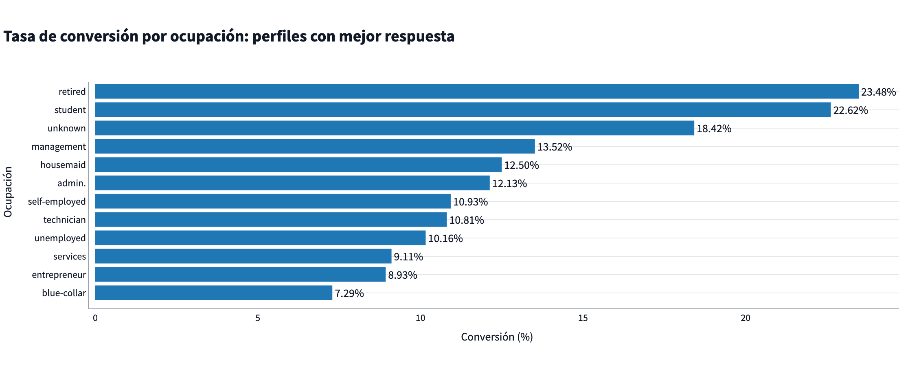
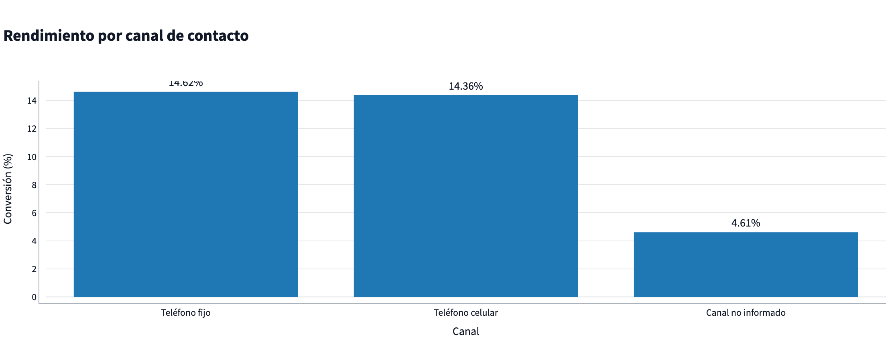
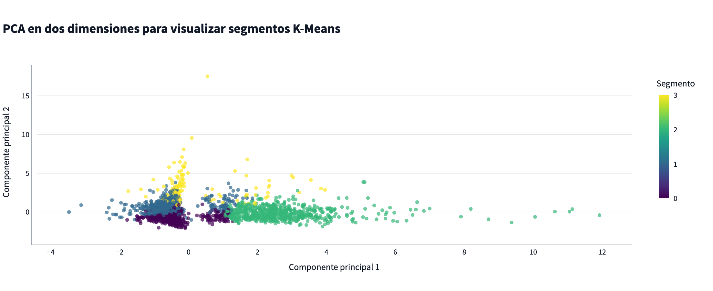

| Decisión | Alternativa | Por qué la elegimos |
|---|---|---|
| SQLite (con soporte Postgres vía DATABASE_URL) | Postgres fijo | Baja fricción de instalación; portable sin perder la opción de escalar |
| FastAPI intermedia | Dashboard lee la BD directo | Desacopla datos de visualización; valida y documenta (OpenAPI) |
| Caché de la API externa | Llamada directa siempre | Tolerancia a fallos de red; demo estable y reproducible |
| PCA + K-Means descriptivo | Modelo predictivo | Segmentación exploratoria honesta; no afirma causalidad |
| Ejecución local + .env | Infraestructura dedicada | Configuración externa y demo reproducible sin dependencias de infraestructura |
| Paso | Qué se muestra | Resultado real |
|---|---|---|
| 1. ETL | python -m etl.pipeline · 3 fuentes | 4.521 filas · estado live_api |
| 2. API | uvicorn api.main:app · Swagger /docs | 200 · conversión 11,52% |
| 3. Dashboard | streamlit run · 3 vistas por audiencia | render Plotly en vivo |



pytest; evidencia guardada como informe de pruebas.